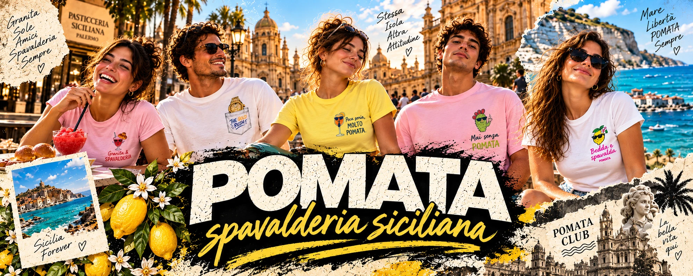

Spavalderia
da indossare.
T-shirt illustrate. Ironia siciliana.
Un’attitudine che ti porti addosso.
La collezione.
Una battuta sulla maglietta.
Il resto lo metti tu.
Ogni t-shirt si acquista nello shop ufficiale POMATA su Spreadshop. Lì trovi prezzi aggiornati, taglie e colori disponibili.
La vita è una passerella.
Un po’ di Sicilia. Molto POMATA.
Il tuo primo colpo di cuore.
Salva un look con il cuore e lo ritroverai qui.
Stessa isola.
Altra attitudine.
POMATA è un modo di stare al mondo: un po’ dolce, un po’ pungente. Come un fico d’India. Come una battuta detta al momento giusto.
Ci trovi il limone con gli occhiali, l’aperitivo che si allunga e quella voglia di uscire anche senza una scusa. Piccole storie siciliane, da indossare a modo tuo.
Scegli il tuo moodFuori, fino a tardi.
Dal primo sole all’ultimo giro.
La Sicilia fa da sfondo. Tu fai il resto.
La vuoi? È tua.
Tu scegli la tua POMATA.
Al resto pensa lo shop.
Come acquisto una t-shirt?
Scegli una grafica dalla collezione o apri un look in passerella. Il pulsante “Acquista nello shop” ti porta a POMATA su Spreadshop: lì scegli il modello, il colore e la taglia e completi il pagamento.
Quale taglia scelgo?
Ogni modello ha la propria vestibilità. Nella pagina prodotto dello shop trovi la tabella delle misure e le taglie disponibili: consultala prima di completare l’ordine.
Spedizioni, cambi e resi?
Stampa, ordine e spedizione sono gestiti da Spreadshirt. Consulta le informazioni aggiornate su tempi e costi di consegna e su cambi e resi.
Posso comprare tutto il look?
Il capo POMATA è la t-shirt. Pantaloni, scarpe e accessori dei look sono abbinamenti di styling. Le immagini di campagna mostrano il mood; per stampa, vestibilità e colori fa riferimento la scheda prodotto nello shop.